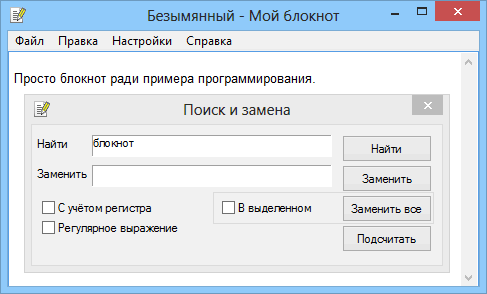

My_Notepad
Назначение
Пример блокнота.

Взаимосвязанные
My_Notepad_Sci - новое рекомендуемое
Обычный блокнот
Начинался как упрощённый пример блокнота, закончилось добавлением поиска и замены, задаток к поддержке мультиязычной программы, сохранение настроек.
При открытии файла сохранение происходит в той же кодировке, какой исходный. Новый файл сохраняется в ASCII.